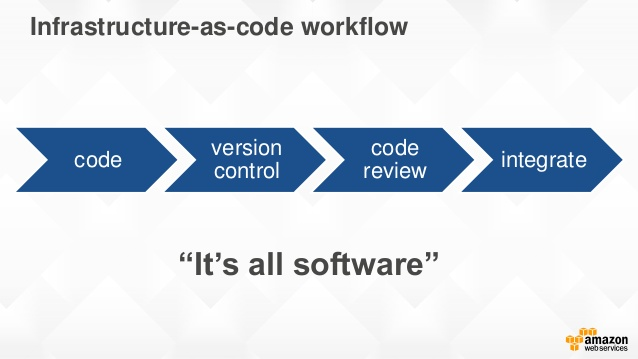
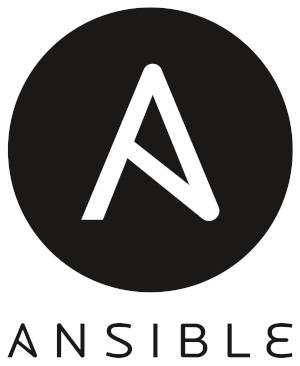
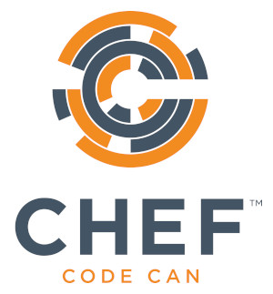
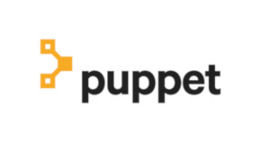
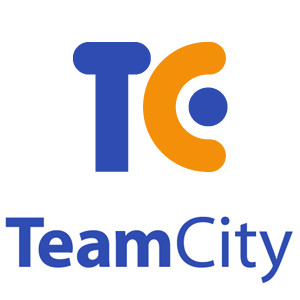
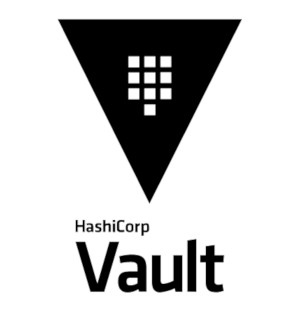

@dubreuia
@dubreuia

 @dubreuia
@dubreuia

Alexandre DuBreuil | alexandredubreuil.com
Freelance software engineer, conference speaker, open source maintainer and sound designer
We define a secret as information that can be used to access sensitive data. Pretty much any information that we cannot put on a public repository. That includes:
public class ClientPasswordCallback implements CallbackHandler {
private static final String USERNAME = "lesfurets";
private static final String PASSWORD = "hunter2";
@Override
public void handle(Callback[] callbacks) {
final WSPasswordCallback pc = (WSPasswordCallback) callbacks[0];
if (USERNAME.equals(pc.getIdentifier())) {
pc.setPassword(PASSWORD);
}
}
}
<?xml version='1.0' encoding='utf-8'?>
<Server port="1234" shutdown="SHUTDOWN">
<!-- ... -->
<GlobalNamingResources>
<Resource name="jdbc/b2b2cDatabase"
username="dev"
password="hunter2"
url="localhost:2345"
type="javax.sql.DataSource"
driverClassName="org.mariadb.jdbc.Driver"
jdbcInterceptors="..."/>
</GlobalNamingResources>
<!-- ... -->
</Server>
Remove secrets from code and production machines
Our objective is to have a workflow that works like this:
insurer_password)testpass)From code to production, different person with different access rights are handling secrets.
If you do infratructure as code, you probably have secrets in your source code. We want to keep infra as code, but remove the secrets.
Our machine provisioning and deployment is done with Ansible. It makes staging possible by facilitating the creation of new environment and enables disposable infrastructure.
  At LesFurets we deliver code to production at least daily. Continuous delivery means that it is easy to push a feature to production, and also easy to push an old version in case of emergency.
Many tools are available for secrets management, yet not all will fit your purpose. Making your own custom solution might not be a good idea given how hard it is.
You can fetch the secrets at:
Buildtime which means the production machine will have a cleartext copy of the secret
Runtime which means the production machine will dynamicaly get the secret, use it, then discard it, resulting in increased security
Lightweight, performant, open-source and battle hardened.

Deploying multiple copies of Vault instead
of using it as a central database.
This is our field experience feedback,
we are looking for very specific advantages:
TPM is a password manager (like Vault) containing our secrets, but it is never used directly by the production servers.
A process by which potential threats can be identified, enumerated, and prioritized.
To design a system with security in mind.
There are many ways to do a threat model,
today we'll use the popular STRIDE method.
There is only one decryption key that can unseal the Vault. It should never be written to disk. If the Vault is sealed (manually or not), it cannot be unsealed again.
If that happens, the application needs to be redeployed.
There is only one, single use, wrapped token than can provide the session token. Once the wrapped token is used, there is no other way of connecting to the Vault.
If the connexion to the Vault is lost for too long, the lease for the session token expires and the app cannot authenticate anymore.
If that happens, the application needs to be redeployed.
dir('scripts/ansible') {
withCredentials([usernamePassword(credentialsId: 'teamPasswordJenkinsUser',
usernameVariable: 'teamPasswordJenkinsUsername',
passwordVariable: 'teamPasswordJenkinsPassword')]) {
withEnv(["TEAM_PASSWORD_USERNAME=${teamPasswordJenkinsUsername}",
"TEAM_PASSWORD_PASSWORD=${teamPasswordJenkinsPassword}"]) {
sh """
docker pull ansible/ansible
docker run -w /playbooks \
-e TEAM_PASSWORD_USERNAME \
-e TEAM_PASSWORD_PASSWORD \
-v \$(pwd):/playbooks \
ansible/ansible ansible-playbook ./tomcat-b2c.yml \
--inventory=./hosts \
--extra-vars='version=${scmHash} target=${conf.nginxEnvName}'
"""
}
}
}
Jenkins Credentials storage is used to connect to TPM. Each environment should have it's own monitored credentials.
Handle secrets in memory only. Ansible is executed in a Docker container with tmpfs volumes.
Deployment time is limited with a lease of 10 minutes on the wrapped token. Past that time, the application cannot unwrap the token and will not start.
We're using vault client in Bash to bootstrap the Vault server. Important parts are:
# Start vault with data and log directory (in the background) and check for startup
nohup vault server -config="conf/install.json" &> logfile &
# (check for startup code omitted)
# Init vault with 1 key, save it and save the root token
vault operator init -key-shares=1 -key-threshold=1 -format="json" > stdout
KEY=$( cat stdout | jq --raw-output ".unseal_keys_b64[0]" )
TOKEN=$( cat stdout | jq --raw-output ".root_token" )
# Unseal vault and authenticate with root token (without ~/.vault-token file)
vault operator unseal "$KEY"
vault login -no-store "$TOKEN"
# setting vault token for next operations
export VAULT_TOKEN="$TOKEN"
# Add read only policy (dev, stage, etc.) for environment to vault
vault policy write "${ENVIRONMENT}" "policies/${ENVIRONMENT}.hcl"
# Mount a new key-value store for the environment (/dev, /stage, etc.)
vault secrets enable -path="${ENVIRONMENT}" kv
# Creates a wrapped token (needs to be unwraped before use), TTL is 10 minutes
vault token create \
-orphan \
-renewable="true" \
-policy="${ENVIRONMENT}" \
-ttl="${TOKEN_TTL}" \
-period="${TOKEN_TTL}" \
-wrap-ttl="${TOKEN_TTL}" \
-format="json" \
| jq --raw-output .wrap_info.token \
> wrap
# Write secrets in vault
# ... (for each key)
value=$( echo "${line}" | cut -d '=' -f 2- | sed 's/^@/\\@/g' )
vault write "${ENVIRONMENT}/${key}" "value=${value}"
# Enable audit log with syslog output (then goes to datadog)
vault audit enable syslog tag="vault-${ENVIRONMENT}-${INSTANCE}"
# Revoke root token, only otp tokens remains
vault token revoke "$TOKEN"
# Seal and close the vault
kill $( cat ${BUILD_DIR}/pid/vault.pid )
Vault server has a simple REST API to query data.
You can use it directly in Java or use a library like spring-vault (from Spring) or vault-java-driver (from BetterCloud)
LOG.info("Vault using certificate");
SslConfig sslConfig = new SslConfig().pemFile(CERTIFICATE_PATH.toFile()).build();
LOG.info("Create connexion with wrapping token (wrapToken)");
Vault vault = new Vault(new VaultConfig().sslConfig(sslConfig)
.address(ADDRESS)
.token(wrapToken)
.build());
LOG.info("Validate creation path (wrapToken)");
LogicalResponse lookup = vault.auth().lookupWrap();
String creationPath = lookup.getData().get("creation_path");
if (!"auth/token/create".equals(creationPath)) {
throw logAndThrow("vault wrong wrapping token path '" + creationPath
+ "' token might be forged");
}
LOG.info("Vault unwrapping login token");
String sessionToken = vault.auth().unwrap().getAuthClientToken();
LOG.info("Vault starting secure connexion (sessionToken)");
return new Vault(new VaultConfig().sslConfig(sslConfig)
.address(ADDRESS)
.token(sessionToken)
.build());
public class ClientPasswordCallback implements CallbackHandler {
private static final VaultService VAULT = CoreServiceFactory.getInstance().getVaultClient();
@Override
public void handle(Callback[] callbacks) {
final WSPasswordCallback pc = (WSPasswordCallback) callbacks[0];
if (VAULT.getSecret("insurer_username").equals(pc.getIdentifier())) {
pc.setPassword(VAULT.getSecret("insurer_password"));
}
}
}
Read OWASP Secure Coding Practices and make sure it is known in the development team. A secure system needs a secure codebase.
Java isn't a secure language but for our use case using short lived secrets (stack memory, not heap memory) is a good start.
Using a security static code analysis tool like Checkmarx is also recommended.
Using Vault decentralized makes it easier to manage and performance is not an issue if each JVM has it own Vault
We rely heavily on Vault, since each PII encryption needs an encryption keys in Vault.
It's also easier to scale by adding new Vaults and more resilient to network failures.
Along your monitoring, it's very important to know how to react when you have an alert.
Infrastructure (Datadog): monitor CPU usage, memory and process number (each tomcat instance has a Vault instance)
Logs (Datadog): alert on any ERROR log from the Vault service (potential security breach)
The audit log is important for two separate reasons: in case of a breach you can diagnose what happened and you can detect a potential breach.
For each operation on Vault, a new entry is added containing information about the request and the response.
vault audit enable syslog tag="vault-${ENVIRONMENT}-${INSTANCE}"
You know what requests (local only) your application does,
then you can alert on anything else.
{
"time": "2019-03-19T13:51:46",
"auth": {
"client_token": "hmac-sha256:...",
...
},
"request": {
"id": "...",
"operation": "update",
"client_token": "hmac-sha256:...",
"path": "auth/token/renew-self",
"remote_address": "127.0.0.1",
...
},
"response": {
...
},
}
{
"time": "2019-03-19T13:51:46",
"auth": {
"client_token": "hmac-sha256:...",
...
},
"request": {
"id": "...",
"operation": "update",
"client_token": "hmac-sha256:...",
"path": "funky/looking/url",
"remote_address": "123.123.123.123",
...
},
"response": {
...
},
}
The harder you make it for an attacker,
the harder it is for you to use your own system.
True Story: all the insurer that had a "@" in their password crashed when we first deployed to production because of a failed char escape
When migrating, how do you test?
Access to the secrets is different now, the most important part is being able to reproduce the production environment with proper authorization. You will also need to:
That's a lot of changes for the development team,
you need to make sure that:
Experience tells us it's easier to migrate the system part by part,
so the teams can adapt progressively.
Remember our goals, mainly: disposable infrastructure, continuous delivery, version migration, reduced operation, performance (speed and network).
...we implemented a single Vault instead of the solution we did?
We'd still have to automate the deployment, distribute the keys securely (currently don't need), distribute the auth credentials securely, make Vault high availability (currently don't need), etc.
Complex solution: compared to a single Vault, this is more complicated to implement, but easier to automate and maintain.
Requires strong automation: we had to port old Bash deployment to Ansible, but it is a healthy approach that benefits the whole system.
Impossible application restart: this is disposable infrastructure, it is not a problem if redeployment is fast.
Continuous deployment and disposable infrastructure: easier to replace than migrate.
DevOps: no additional infrastructure, less work for the operations team, and more freedom for the devs.
We have no network failures, no migration, excellent performance and easy staging for new environment.
Security is hard! But it gets easier if your solution fits your system and your process. Make sure you keep your goals and risks in mind when you design your solution and choose your tools.
Alexandre DuBreuil | alexandredubreuil.com